Mulberry Fork of the Warrior (Lower)
| 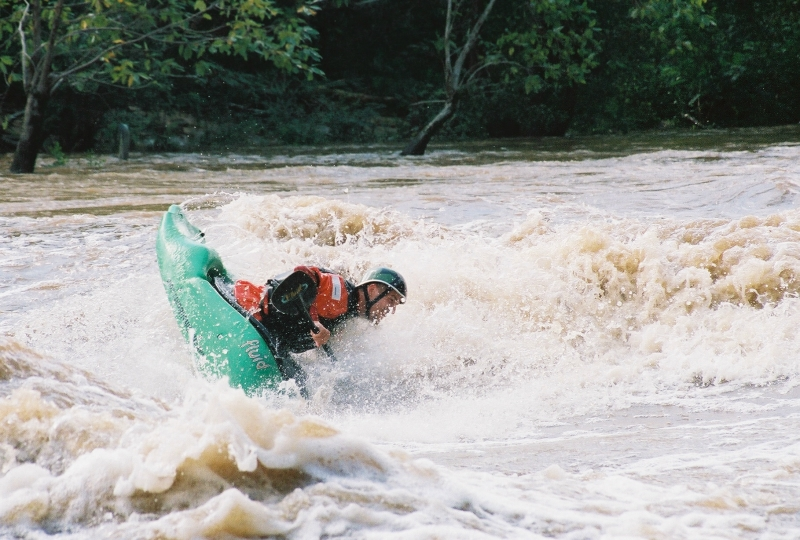 | Joe Momma's Hole photo courtesy Jeremy Adkins |
| 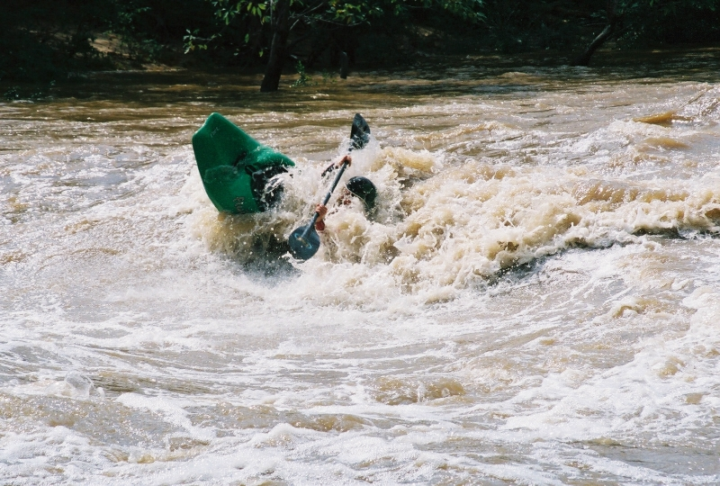 | Joe Momma's Hole photo courtesy Jeremy Adkins |
| 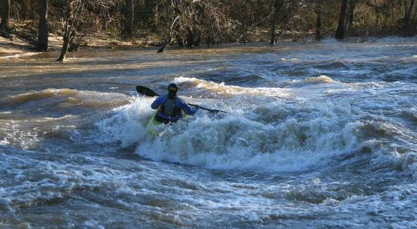 | Joe Momma's Hole photo courtesy Jeremy Adkins |
| 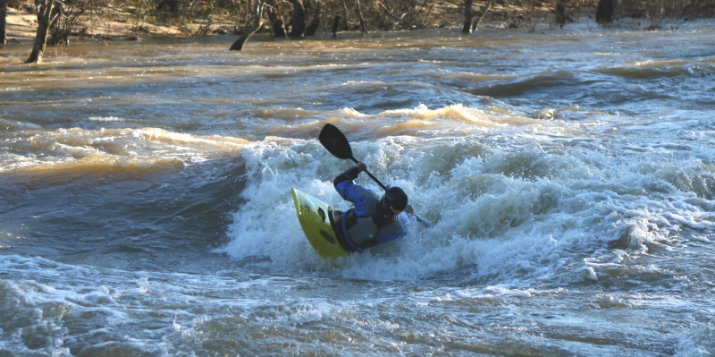 | Joe Momma's Hole photo courtesy Jeremy Adkins |
| 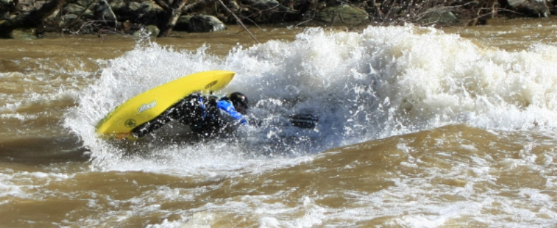 | Lunch Stop photo courtesy Jeremy Adkins |
| 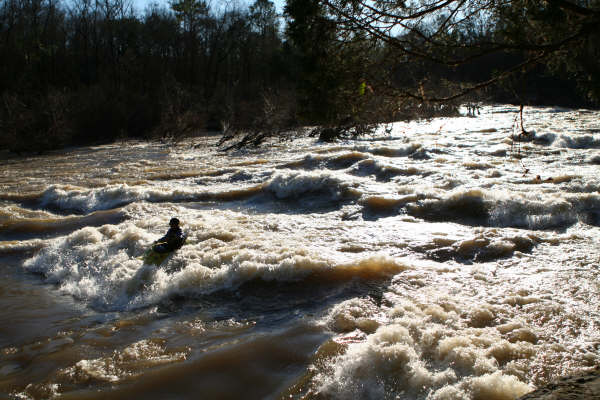 | Doo-Doo Hole, Mini Garb in the background photo courtesy Jeremy Adkins |
| 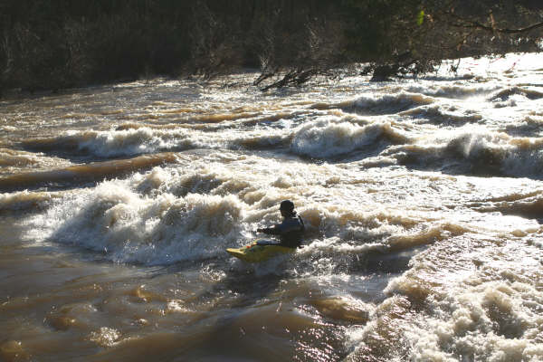 | Doo-Doo Hole, Mini Garb in the background photo courtesy Jeremy Adkins |
| 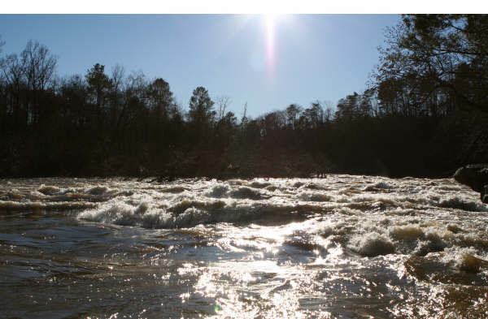 | Doo-Doo Hole, Mini Garb in the background photo courtesy Jeremy Adkins |
| 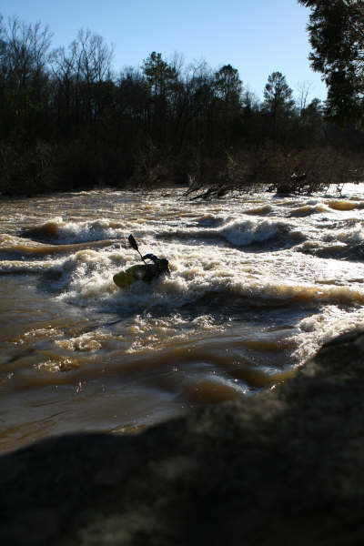 | Doo-Doo Hole, Mini Garb in the background photo courtesy Jeremy Adkins |
| 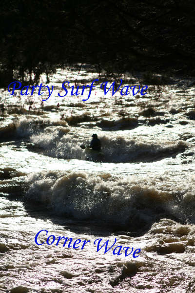 | Corner Pocket Wave and Party Surf Wave photo courtesy Jeremy Adkins |
| 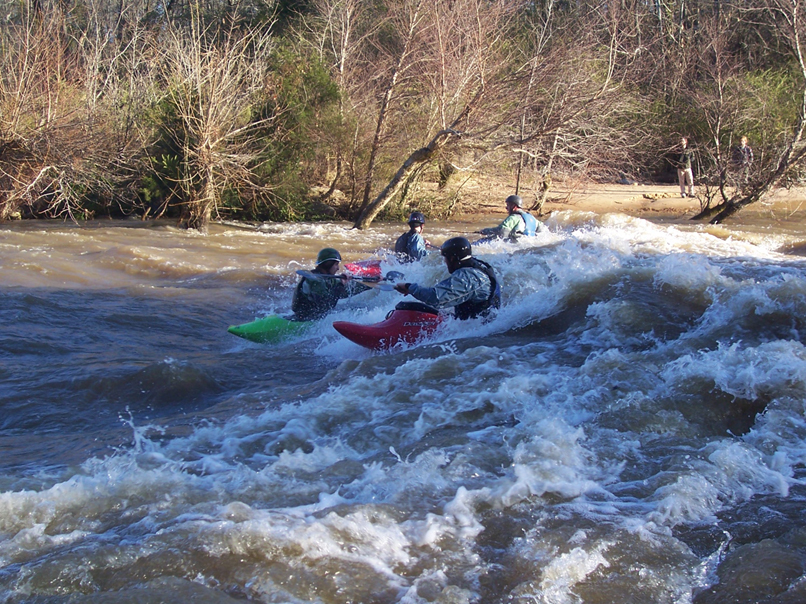 | Hawaii 5-0, a multi-user environment photo courtesy Jeremy Adkins |
| 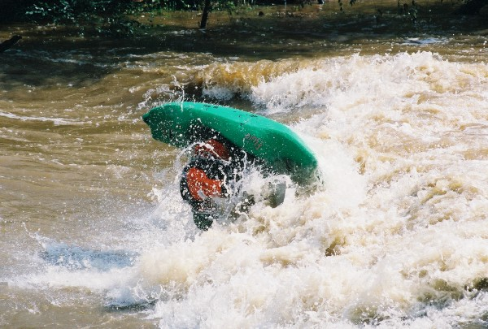 | Jeremy Adkins in action at the 5-0 Wave photo by Kim Livingston, Surface Dynamics |
| Jeremy Adkins at the 5-0 Wave photo by Kim Livingston, Surface Dynamics |
|
| 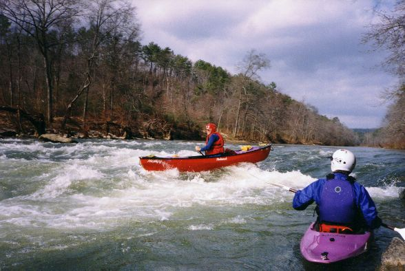 | Murray Carroll. Note the more recent boat and a helmet on his head! |
| 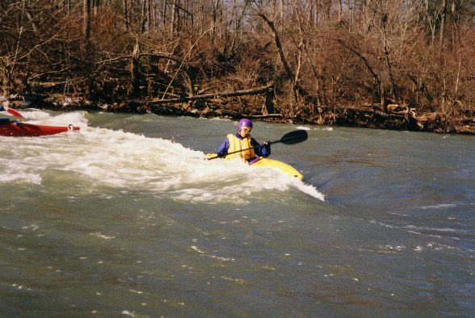 | Jim Dowdy sidesurfing in 1994. |
| 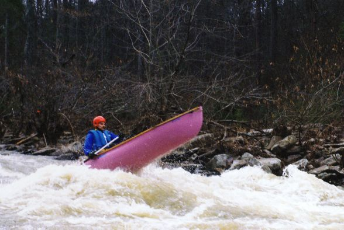 | Talk about a lucky shot. Or maybe Gary Holders camera skills come through. Anyway, Rob Welch catches air at Lunch Stop. |